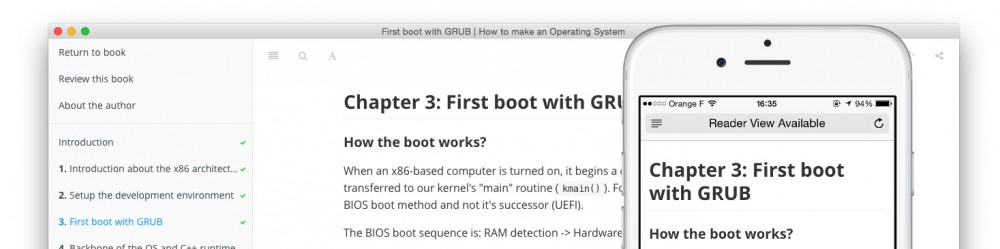

Markdownで書く電子書籍開発環境
#niku_sushi
自己紹介

- Name : azu
- Twitter : @azu_re
- Website: Web scratch, JSer.info
JavaScript Plugin Architecture

JavaScript Plugin Architecture
電子書籍の開発中にやったこと
やりたかったこと

[Markdown] 電子書籍開発環境 · Issue #42
- Markdown/文章のLint
- インラインコードのLint
- ファイルのincludeするMarkdown拡張
- Markdown to HTML or PDF
- エディタ
[Markdown] 電子書籍開発環境 · Issue #42
- Markdown/文章のLint => textlint
- インラインコードのLint => ESLint
- ファイルのincludeするMarkdown拡張 => GitBook+プラグイン
- Markdown to HTML or PDF => GitBook
- エディタ => GitBook Editor
GitBook

GitBook
- Markdownで電子書籍を書けるツール/プラットフォーム
- GitbookIO/gitbook
- Markdown -> HTML/PDF/Epubの変換
- 各章を書いてSUMMARY.mdにリンクを書くだけで作れる
- プラグインで拡張できる
gitbook.com
- GitBookの公開プラットフォーム
- とても良く出来てる
- HTML/PDF/Epubの自動生成、コミット毎プレビュー、販売/寄付、Oraganization、アップデート通知、オンラインエディタ
- GitHubとDeployment APIでhookして自動的に反映できる
✔ GitBook連携の設定 · Issue #4 · azu/JavaScript-Plugin-Architecture
GitBookの構造

.
├── README.md
├── SUMMARY.md
└── book.json
SUMMARY.mdから各章へのMarkdownファイルへリンクgitbook build=> 静的なHTMLが生成される
JavaScript Plugin Architectureの構造
├── README.md
├── SUMMARY.md
├── book.json
├── src(*.js)
│ └── jQuery
├── ja (*.md, *.png 文章関係)
│ └── jQuery
├── test (*-test.js)
│ └── jQuery
└── package.json
✔ プロジェクト構造について · Issue #5 · azu/JavaScript-Plugin-Architecture
textlint
- Markdownやテキスト向けのLintツール
- テキスト版ESLintツール
- ルールをJavaScriptで簡単に追加できる
- textlintで日本語の文章をチェックする | Web Scratch
textlint rule
- textlint-rule-max-ten
- 一文に利用できる
、の数をチェックするルール
- 一文に利用できる
- textlint-rule-spellcheck-tech-word
- WEB+DB用語統一ルールベースの単語チェックするルール
- textlint-rule-no-mix-dearu-desumasu
- 「ですます」調と「である」調の混在をチェックするルール
textlint rule
- textlint-rule-no-start-duplicated-conjunction
- 「しかし、〜 。 しかし、〜。」など同じ接続詞が連続してないかをチェックするルール
- textlintのルールは以下にまとめられている
プロジェクト固有の表記揺れ
- 表記揺れのチェックに汎用的な辞書/ルールはない
- 全ての表現が一意ならそもそも表記揺れなんて起きない
- 書籍の中で一貫した表現を保証するためのもの
- プロジェクト固有のルールで表記揺れのチェックが必要
textlint-rule-prh
- vvakame/prh を利用したtextlint rule
- yamlでルールを簡単に追加できる(正規表現や大文字小文字などよくある表記揺れは簡単に書ける仕組みがある)
rules:
- expected: プラグインアーキテクチャ
pattern:
- プラグイン機構
- プラグインのアーキテクチャ
textlint-rule-prh
- textlint-rule-prhについては詳しくは以下の記事を参照
- textlint + prhで表記ゆれを検出する | Web Scratch
なぜプロジェクト毎に表記揺れルール？
- typoなどを見つけた場合にルールを追加してから修正できる
- Connectに統一しよう · Issue #48 · azu/JavaScript-Plugin-Architecture
- リグレッションテストと同じ意味合い
- 表記がルールとして明文化できるのでContributeしやすい
GitBook + textlint
- GitBookは
SUMMARY.mdから各章の.mdへのリンクがある - azu/gitbook-summary-to-path
- SUMMARY.mdに書かれているファイルを
textlintする
$ summary-to-path SUMMARY.md | xargs textlint
# 全ての章がtextlintでLintできる
✔ textlintの導入 · Issue #1 · azu/JavaScript-Plugin-Architecture
コードのLint
- コードをESLintでチェックしたい
- 技術書に載せるコードを書く方法は2種類
- コードを外部ファイルとして書いて読み込む
- インラインにコードを書く
外部ファイルのコード
- azu/gitbook-plugin-include-codeblock
- いい感じに外部ファイルをCodeBlockとして読み込むGitBookプラグイン
[include, test.js](fixtures/test.js)
と書けば、CodeBlockとして展開される。 => GitHub上ではただのリンクとなる(fallback)
外部ファイルのコードをLint
- ESLintを使い単純にJavaScriptとしてLintを通す
✔ ESLintの導入 · Issue #6 · azu/JavaScript-Plugin-Architecture
インラインコードのLint
これは`a`という変数を定義している。
```js
var a = 1;
```
- インラインに書かれているコードに対してもLintを行う
- インラインコードは実行されないのでtypoし易い
インラインコードのLint
- eslint/eslint-plugin-markdownを利用
- ESLintのプラグインとしてインラインコードをLintできる
jsやjavascriptといったCodeBlockに対してLint
インラインコードのLintの問題
- 問題: インラインコードは実行できないのが正常というケース！
- 説明するためにコードの一部を取り出す場合
- コードとしては実行できない
- コードブロックのみで見ると変数が未定義となってる
- => インラインコード専用のゆるいルールを作る
インラインコード専用のゆるいルール
- 設定ファイルを分けることで解決！
- 通常のコード用: .eslintrc
- インラインコード用: .md.eslintrc
- .eslintrcを継承
no-undefやno-unused-varsなどを無効化
✔ ESLintでインラインコードのLint · Issue #7 · azu/JavaScript-Plugin-Architecture
エディタ
- 殆ど素のMarkdownなので好きなエディタが使える
- GitBookの公式エディタもある
- WebStorm、Atom、Markdownエディタなどでよい
WebStorm + File Watch + textlint

Atom + 1000ch/linter-textlint

CONTRIBUTING.md
- Contributing Guidelinesを書いてみる
- 書こうと思うと、どういう手順でプレビューできるか、修正するか、文章を書いていくかの整理が必要になる
- 自分のためでもあり、Contributingする人のためになる
✔ CONTRIBUTING.md · Issue #12 · azu/JavaScript-Plugin-Architecture
Issue/Pull Request駆動

Issue/Pull Request駆動
- 文章の正しさは人により異なるので根拠を残す
- コードと違って曖昧成分が多い
- 文章の自動チェックを入れた理由を残す
- Pull Request駆動で文章もCIを通してから
- 検証済みマージ - マージされるとGitBookに自動反映
Issue
- Issueで設計をしてから文章を書く
- 気になったことはとりあえずIssueとしてメモ書き
- 参考リンクとかをコメントにどんどん書いていく
- ちょっとづつ進められるようにタスクをIssueとして細分化
- => 飽きやすいのを防止するため
GitHubと電子書籍
この構成で技術書を書きたい人へ
- azu/gitbook-starter-kit
- git cloneするだけでこの構成で書けるスターターキット
- 以下のようにするだけで技術書を書ける環境です(gitbook.comの設定は各自)
git clone https://github.com/azu/gitbook-starter-kit.git your-book-name
cd your-book-name
npm install
まとめ
- JavaScript Plugin Architectureという電子書籍で実践してる事
- Markdownで書いてGitBookでビルド、公開してる
- textlintで文章をチェック
- JavaScriptやインラインコードをESLintでチェック
- Issue/Pull Request駆動でモチベーションを保つ
疑問点
- 登場してきたIssueに書いてみるといいかも!?